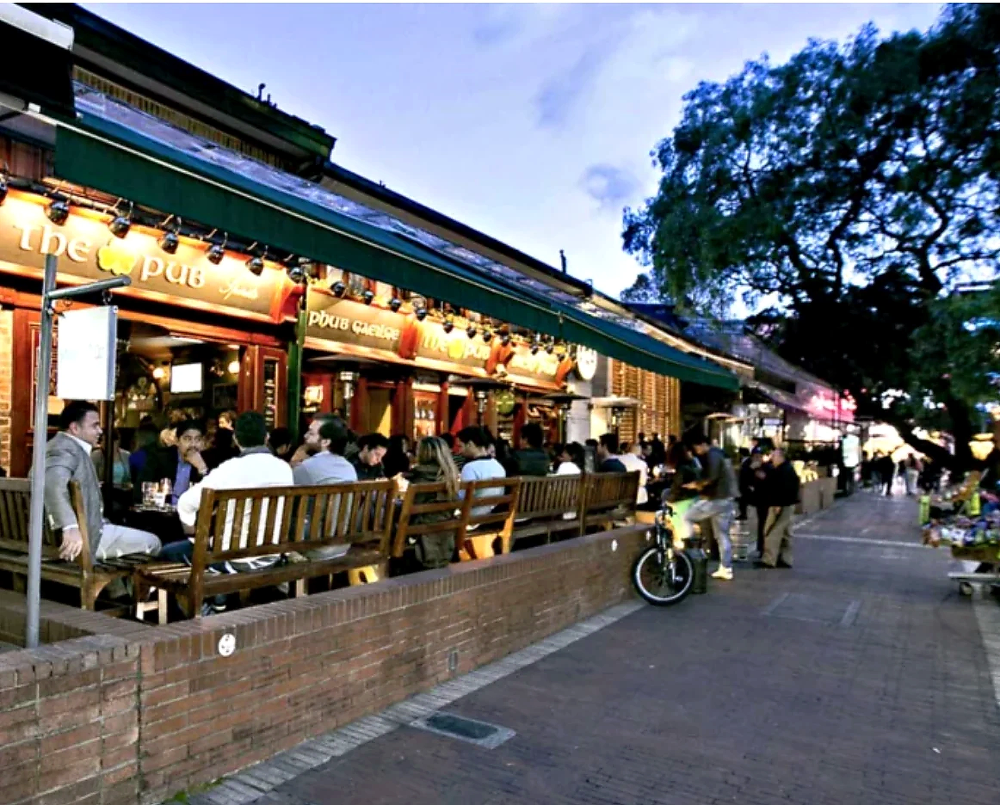
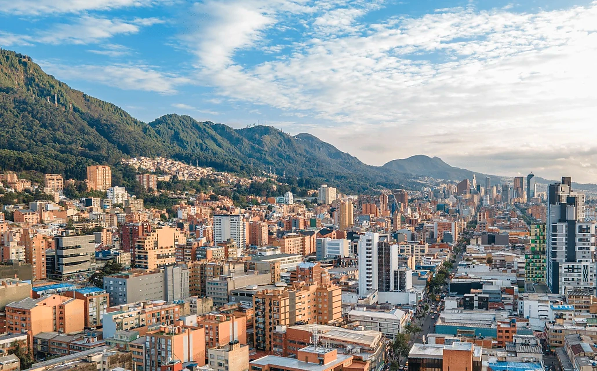
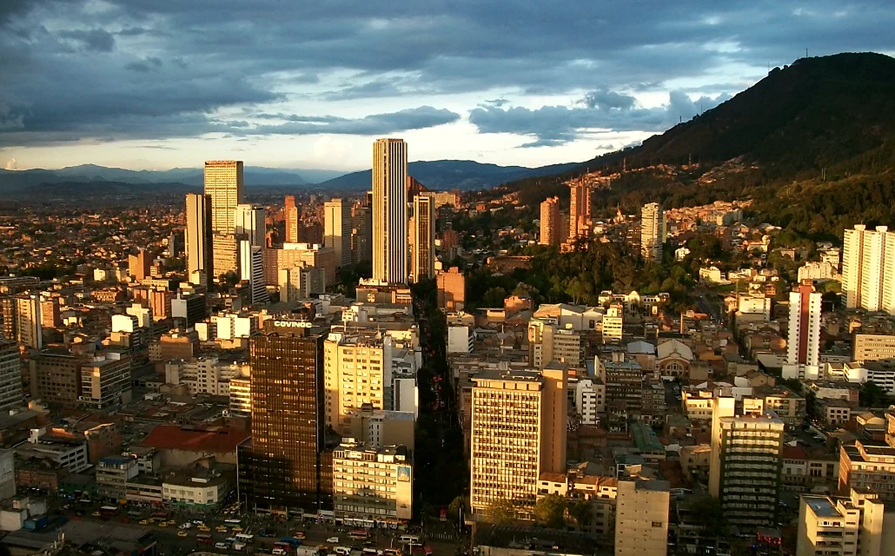

Bogotá es enorme, el tráfico pesa y la base cambia la experiencia diaria. Antes de comparar tarifas, decide si quieres historia, gastronomía, noche, comodidad en el norte o una posición más central.


No existe un único mejor barrio. Existe el barrio que reduce desplazamientos y encaja con tu forma de viajar.
Historia + primera inmersión
Dormir dentro del centro histórico facilita museos, iglesias, Plaza de Bolívar y calles coloniales.
Plaza de Bolívar · eje del Museo del Oro
Primera visita cultural · estancias cortas · historia
Excelente a pie durante el día; combina taxi/app por la noche y para ir al norte
Hotel de la Opera
También compara pequeños hoteles patrimoniales del centro
Encanto + gastronomía
Casas de ladrillo, cafés y restaurantes crean una base más local y contemporánea.
Quinta Camacho · Zona G · Calle 65
Parejas · gastronomía · quien prefiere barrio a shopping
Equilibrada en taxi/app tanto hacia el centro como hacia el norte
HAB Hotel
Otra referencia premium cercana: Four Seasons Casa Medina

Noche + compras
La base más directa para restaurantes, centros comerciales y vida nocturna.
Zona T · Andino · El Retiro
Vida nocturna · compras · primera visita centrada en el norte
Muy fácil a pie dentro de la zona; taxi/app para el centro histórico
Sofitel Bogotá Victoria Regia
También compara La Cabrera y el entorno de Calle 85
Mejor equilibrio en el norte
Zona moderna, verde y previsible para restaurantes, cafés y una estadía cómoda.
Parque 93 · Chicó Norte · eje de Calle 93
Primera visita · trabajo + turismo · parejas · familias
Muy buena en taxi/app; el traslado al centro histórico es más largo
Novotel Bogotá Parque 93
Para más diseño, compara también The Click Clack Hotel Bogotá

Encanto + ritmo lento
Antiguo pueblo incorporado a la ciudad, con restaurantes, calles agradables y mercado dominical.
Centro de Usaquén · Hacienda Santa Bárbara · Calle 116
Repetidores · estancias tranquilas · gastronomía
Cómoda dentro del norte; más lejos de La Candelaria y los museos centrales
Biohotel Organic Suites
Hay muchas opciones modernas entre Calle 100 y 120

Central + cultura
Puente entre el centro histórico y la Bogotá contemporánea, con museos, La Macarena y ejes corporativos.
Museo Nacional · Carrera 7 · La Macarena
Cultura · negocios · quien quiere una posición central
Buena para equilibrar centro, norte y aeropuerto sin quedar en un extremo
Grand Hyatt Bogotá
Grand Hyatt queda más al oeste; úsalo como referencia de perfil, no de microlocalización
| Zona | Perfil | Mejor para | Movilidad |
|---|---|---|---|
| La Candelaria | Historia + primera inmersión | Primera visita cultural · estancias cortas · historia | Excelente a pie durante el día; combina taxi/app por la noche y para ir al norte |
| Quinta Camacho / Chapinero | Encanto + gastronomía | Parejas · gastronomía · quien prefiere barrio a shopping | Equilibrada en taxi/app tanto hacia el centro como hacia el norte |
| Zona T / Zona Rosa | Noche + compras | Vida nocturna · compras · primera visita centrada en el norte | Muy fácil a pie dentro de la zona; taxi/app para el centro histórico |
| Parque 93 / Chicó | Mejor equilibrio en el norte | Primera visita · trabajo + turismo · parejas · familias | Muy buena en taxi/app; el traslado al centro histórico es más largo |
| Usaquén | Encanto + ritmo lento | Repetidores · estancias tranquilas · gastronomía | Cómoda dentro del norte; más lejos de La Candelaria y los museos centrales |
| Centro Internacional | Central + cultura | Cultura · negocios · quien quiere una posición central | Buena para equilibrar centro, norte y aeropuerto sin quedar en un extremo |